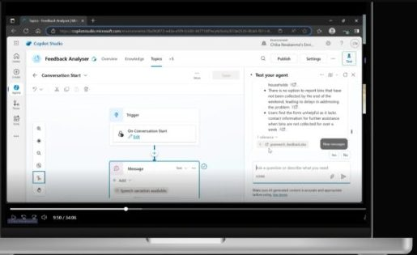

04 / My work
Conversational design.
I design conversations that help people get things done, from understanding intent and asking useful questions to confirming actions and recovering when something goes wrong.
- Intent and context
- Dialogue flows
- Repair and recovery
Projects / 03
Selected case studies
3 conversational design case studies
- CASE STUDY / 01

Conversational design01Feedback Analyser
A conversational prototype retrieves page feedback and traces findings to the original submissions.
Copilot Studio · Conversation architecture - CASE STUDY / 02
 Conversational design02
Conversational design023G Lodges: Mara
A working chatbot prototype connected lead qualification, capture and booking.
Voiceflow · Make.com · Calendly - CASE STUDY / 03
 Conversational design03
Conversational design03Nomi Pay
A four-participant concept test explored whether payment questions could be resolved in-app.
Concept · Figma · Lovable
No projects match that search.
Try another word, or clear your search.